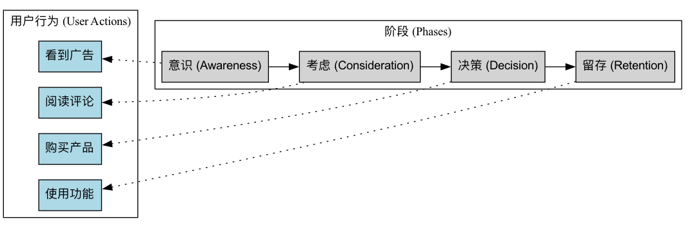

用户旅程图¶
当我们设计一个产品或服务时，很容易陷入对单个功能或界面的孤立思考中，而忽略了用户与我们互动的完整、端到端的体验。用户旅程图（User Journey Map） 正是为打破这种“隧道视野”而生的强大可视化工具。它以讲故事的方式，系统性地描绘出一个特定的用户画像（Persona），为了达成某个特定目标，而与你的产品、服务或品牌进行交互的完整过程。它不仅记录了用户在每个阶段的行为步骤，更重要的是，它深刻地揭示了用户在整个过程中的思想、感受和痛点。
用户旅程图的核心价值在于，它迫使我们从用户的视角出发，去审视和体验我们自己所提供的服务。它将一个原本碎片化、不可见的体验过程，转化为一张清晰、直观、充满共情的可视化地图。通过这张地图，团队可以一目了然地识别出体验中的高峰和低谷，找到导致用户流失的关键障碍点，并发现提升用户满意度和忠诚度的创新机会。它是一座连接产品与用户真实情感世界的桥梁。
用户旅程图的核心构成要素¶
一张标准的用户旅程图，通常像一个横向的泳道图，它包含了以下几个核心的构成部分：
- 用户画像（Persona）：这张旅程图的主角是谁？在图的开始，必须清晰地定义这张图是关于哪个核心用户画像的。不同的用户，其旅程可能截然不同。
- 场景与目标（Scenario & Goals）：这位用户处在一个什么样的具体场景下？他/她希望通过这次旅程达成一个什么样的目标？例如，“一位忙碌的上班族（Persona），希望在下班回家的地铁上（Scenario），为家人预定一份周末的晚餐（Goal）。”
- 旅程阶段（Journey Phases / Stages）：将整个端到端的旅程，分解为几个主要的、逻辑连续的阶段。例如，对于一次电商购物旅程，阶段可能包括：认知 -> 考虑 -> 购买 -> 等待 -> 收货 -> 使用/售后。
- 行为/触点（Actions / Touchpoints）：在每个阶段，用户具体会做些什么？他们会通过哪些渠道或触点（如社交媒体、App、客服电话、实体店）与你进行互动？
- 思想（想法）：在做这些事情的时候，用户的脑子里在想什么？他们有哪些疑问、期待或内心独白？
- 感受/情绪（Feelings / Emotions）：这是旅程图的灵魂。用一条情绪曲线来描绘用户在每个阶段的情绪起伏，是感到愉悦、困惑、焦虑，还是沮丧？这能帮助我们快速定位体验中的“痛点”和“爽点”。
- 痛点与机会（Pain Points & Opportunities）：基于以上的分析，在每个阶段，清晰地识别出导致用户负面情绪的关键障碍（痛点），并基于此进行头脑风暴，提出相应的改进机会。
用户旅程图模板¶

C[对比/考虑] --> D[预定/行动] --> E[到达/体验] --> F[分享/回味]
G[行为/触点
- 在App上搜索西餐厅
- 浏览餐厅列表] --> H[行为/触点
- 打开3个餐厅详情页
- 查看菜单、图片、评价] --> I[行为/触点
- 选择一家，点击预定
- 填写预定信息
- 收到确认短信] --> J[行为/触点
- 在餐厅用餐
- 体验服务和菜品] --> K[行为/触点
- 在社交媒体分享照片
- 为餐厅写好评]
L[想法
选择太多了，哪家好呢？
希望找一个氛围不错的地方。] --> M[想法
这家看起来不错，但评价有点少。
菜单图片太诱人了。] --> N[想法
预定流程不要太复杂。
希望能备注生日用途。] --> O[想法
服务员很贴心。
这道菜超出期待！] --> P[想法
这次体验很棒，一定要推荐给朋友。]
Q[情绪曲线
（平稳）] --> R[情绪曲线
（略有焦虑）] --> S[情绪曲线
（期待）] --> T[情绪曲线
（体验高峰）] --> U[情绪曲线
（满意）]
V[痛点/机会点
痛点：餐厅太多，信息过载
机会点：提供纪念日精选标签] --> W[痛点/机会点
痛点：难以判断评价真实性
机会点：推出食客真实照片功能] --> X[痛点/机会点
痛点：无法在线添加特殊要求
机会点：增加预定备注字段]
```
如何创建一张用户旅程图¶
-
第一步：明确目标与范围
首先要明确，我们为什么要创建这张旅程图？我们希望解决什么问题？然后，确定这张图所要描绘的用户画像和具体场景。
-
第二步：收集用户数据
旅程图必须基于真实的用户研究，而非团队的凭空想象。数据来源可以包括：用户访谈、可用性测试、问卷调查、客户支持记录、网站分析数据、社交媒体评论等。
-
第三步：组织工作坊，共创旅程图
召集一个跨职能的团队（包括产品、设计、研发、市场、客服等），将收集到的所有用户洞察（可以用便利贴的形式）都带到会议室。团队一起，以讲故事的方式，共同梳理和定义旅程的各个阶段、以及用户在每个阶段的行为、思想和感受。
-
第四步：绘制情绪曲线，识别关键时刻
共同绘制出用户的情绪曲线，识别出那些决定用户体验成败的关键时刻（Moments of Truth），特别是那些情绪的最低谷（痛点）和最高峰（爽点）。
-
第五步：发现机会并确定行动计划
针对识别出的每一个关键痛点，进行头脑风暴，提出具体的、可行的改进机会。最后，对这些机会进行优先级排序，并将其转化为具体的产品待办事项或行动计划。
应用案例¶
案例一：改善机场的旅客体验
- 场景：一家机场管理公司希望提升旅客的整体满意度。
- 应用：他们绘制了“首次从本机场出发的国际旅客”的用户旅程图。通过分析，他们发现最大的痛点发生在“安检”和“寻找登机口”这两个阶段，旅客普遍感到焦虑和困惑。基于此，机场增加了更清晰的指引标识、引入了智能安检通道以缩短排队时间，并在App中增加了登机口位置的实时导航功能。
案例二：优化在线课程的学员完课率
- 场景：一个在线教育平台发现，很多用户购买了课程，但中途就放弃了学习。
- 应用：通过绘制“在职学员学习一门编程课”的旅程图，他们发现，学员的情绪在课程的第三周左右会跌入谷底，因为此时课程难度加大，且学员容易因工作繁忙而打乱学习节奏。针对这个痛点，平台设计了“班主任督学服务”、“学习小组”和“在第三周推送鼓励性徽章”等干预措施，显著提升了课程的完课率。
案例三：提升一家银行的开户流程
- 场景：一家传统银行希望优化其线上的新用户开户流程。
- 应用：旅程图显示，用户在“上传身份证明”和“阅读冗长的用户协议”这两个步骤时，感到非常不耐烦和不信任，导致了大量的用户流失。为此，银行简化了协议内容，并开发了通过NFC直接读取身份证信息的便捷功能，使得整个开户流程的顺畅度和转化率都得到了极大提升。
用户旅程图的优势与挑战¶
核心优势
- 建立全局视角：帮助团队打破部门墙和功能孤岛，从一个整体的、连贯的视角来审视用户体验。
- 强大的共情工具：能够让团队成员，特别是工程师和管理者，直观地感受到用户的真实情绪和痛点。
- 有效识别问题与机会：清晰地暴露出现有流程中的断点和障碍，并为创新提供了明确的焦点。
- 促进团队协作与共识：共创旅程图的过程，本身就是一次极好的、让所有利益相关者对齐用户认知、达成共识的团队活动。
潜在挑战
- 代表性问题：一张旅程图通常只代表一个用户画像和一个场景，需要创建多张图才能覆盖更广泛的用户群体。
- 基于真实研究：如果缺乏真实、深入的用户研究作为基础，旅程图就可能变成一厢情愿的“幻想地图”。
- 需要持续更新：随着产品和服务的迭代，用户的旅程也会发生变化，旅程图需要被视为一个“活的文档”，定期进行更新。
延伸与关联¶
- 用户画像（Persona）：是创建用户旅程图的前提。没有清晰的用户画像，旅程图就失去了主角。
- 服务蓝图（Service Blueprint）：可以看作是用户旅程图的“后台视角”。当旅程图描绘了用户在前台的体验后，服务蓝图则进一步向下延伸，详细描绘了为了支撑这些前台体验，后台的人员、系统和流程是如何运作和交互的。
- 同理心地图（Empathy Map）：是一个更聚焦于深入挖掘单个用户内心世界的工具，常被用作创建用户画像和旅程图前期的素材收集和共情练习。
来源参考：用户旅程图作为用户体验设计（UX）领域的核心工具，其概念和实践在不断演变。Adaptive Path的联合创始人Jesse James Garrett在其著作《用户体验要素》中奠定了相关理论基础。Nielsen Norman Group（NN/g）等权威机构对如何创建和使用用户旅程图有大量的实践指南和文章。